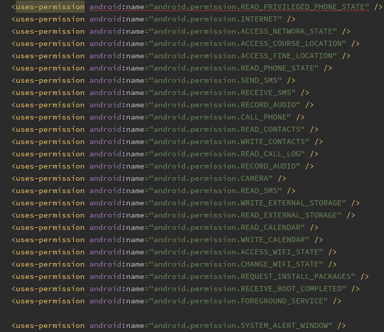
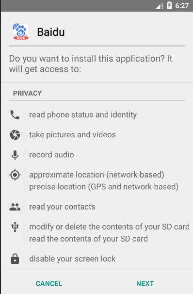
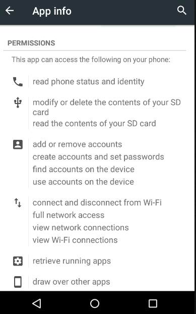
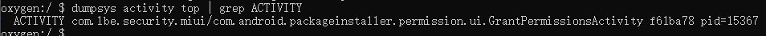

*郑重声明：本文内容只为学习研究之用，如有人用于非法用途，产生的后果笔者不负任何责任。
Android权限控制是对应用访问设备信息和接口的限制，其作用是保护Android用户的隐私。
Android安全架构的设计主旨是：在默认情况下，任何应用都没有权限执行会对其他应用、操作系统或用户带来不利影响的任何操作。
对于第三方应用来说，权限分为三个保护级别：普通、签名和危险。
- 普通权限：应用需要访问自身沙盒之外的数据或资源，但对用户隐私或其他应用带来的风险很小，如设置时区、壁纸、闹钟；
- 签名权限：用于两个签名相同的应用间进行安全的数据共享；
- 危险权限：应用需要的数据或资源设计用户隐私，或者可能对用户存储的数据或其他应用的操作产生影响，如读取联系人，拍照、定位等。
系统对用户隐私保护的演进
不论系统如何更新，应用申请权限首要的一部一直没变，就是在AndroidManifest.xml中进行注册，如下图：

而在用户主动管理权限的部分，Android正在日益完善，分水岭是在Android 6.0。
Android 6
在Android6.0发布之前，应用申请权限只需在AndroidManifest文件中列举出来即可，在应用安装时会一一列举出来，但是用户并不能选择“允许”或“禁止”，甚至应用安装后，在“设置”中也仅仅能看到应用申请了哪些权限，用户并不能做任何修改。下图为Android5.0系统应用安装时和安装完成后的权限管理情况：


在这一阶段，用户的隐私并不属于用户自己，全凭第三方应用开发者做主，“人为刀俎，我为鱼肉”。好在国内一些手机厂商深度定制的ROM（如MIUI等）在Android 6.0之前就加入了权限管理功能。
Google在Android 6.0中推出了新的运行时权限管理机制。应用安装时不再直接授予应用危险权限，而是在应用启动时需要通过弹框的方式向用户请求。
“道高一尺魔高一丈”，这一时期也出现了许多用户拒绝权限，应用就直接退出的操作，如支付宝、微博、淘宝等。而微信等一批应用就很“机智”了，编译APP时的targetSdkVersion属性直接设置为22（即Android5.1），应用安装上就直接授予了权限，大多数用户并不会手动去“设置”中关闭权限。
Android 7
Android 7增加了“私有目录限制访问”和“StrictMode API政策”两个权限限制，私有文件的权限放宽会触发SecurityException，应用间分享私有文件也应该使用FileProvider，而不是像之前一样直接发送file://URI。
Android 8
Android 8之前，应用被授予某权限，系统会将授予该权限同一权限组的所有权限（Manifest中申请的）。比如，用户授予了读短信的权限，则与之同组的发送短信、接收短信等权限都会一同授予，这显然是不合理的。Android8纠正了这一点，但是并不彻底。如果用户同意了读短信的权限申请，那么后续应用申请发送短信的权限时，系统将直接授予该权限，不会再提示用户同意。
Android 9
Android 9为了增强用户隐私保护增加了若干限制。比如，限制后台应用访问设备传感器，限制通过WiFi扫描检索到的信息，修改了通话、手机状态（READ_PHONE_STATE）和WiFi扫描的新权限规则。
- 应用访问麦克风、摄像头、位置等需要前台服务
- 将读/写通话日志，处理呼出电话等权限分配一个新的权限组CALL_LOG
- 限制访问电话号码：READ_CALL_LOG权限
- 通过WiFi广播不再能获取到SSID、BSSID(Wifi名和路由器MAC)，想要获取SSID和BSSID需要位置权限和ACCESS_WIFI_STATE权限
Android 10
Android 10提供了更加严格的隐私保护：
用户授予位置权限时多了一种选择，即仅在应用实际使用时访问位置；
应用无法访问设备不可重置的标识符，如IMEI、序列号等。设备MAC地址也会默认在连接到WLAN时随机分配。
阻止应用从后台启动，若要通过Service唤醒ACtivity，需要将Service设置为前台服务
文件分区存储，应用只能访问自己目录下的文件和公共媒体文件，
/storage/emulated/0/Android/data/包名/files和/storage/emulated/0/Downloads(Pictures)
Android 11
Android 11的几项重大变更：
- TargetSDK为Android 11的应用，强制执行分区存储机制；
- 对位置、麦克风和摄像头权限进行单次授权；
- 已经授予权限的应用，若用户几个月未使用，自动重置权限；
- 在前台服务中申请摄像头、麦克风等权限时，需要声明camera和microphone前台服务类型；
- 应用对设备上安装的其他应用的可见性可以在Manifest中添加
queries元素进行配置，告知系统本应用对哪些应用可见。
各版本更新情况：
https://developer.android.google.cn/about/versions/11
权限控制源码分析
Android 5.1
Android5.1以下的系统不需要弹框申请权限，但有时为了防止抛异常，需要检查该权限是否被授予，检查权限调用了Context类的checkPermission方法，传入参数为permission，pid, uid。
具体实现在：/framework/base/core/jaca/android/app/ContextImpl.java.
http://androidxref.com/5.1.1_r6/xref/frameworks/base/core/java/android/app/ContextImpl.java
1 |
|
ActivityManagerNative.getDefault()方法的返回值为IActivityManager类型，该类是一个接口，其实现类ActivityManagerService中的checkPermission():
1 | public int checkPermission(String permission, int pid, int uid) { |
进入checkComponentPermission():
1 | int checkComponentPermission(String permission, int pid, int uid, |
进入ActivityManager.checkComponentPermission:
http://androidxref.com/5.1.1_r6/xref/frameworks/base/core/java/android/app/ActivityManager.java
1 | public static int checkComponentPermission(String permission, int uid, |
普通应用的权限申请会进入最后一个分支：AppGlobals.getPackageManager()
.checkUidPermission(permission, uid);
进入AppGlobals.getPackageManager():
1 | public static IPackageManager getPackageManager() { |
ActivityThread.getPackageManager():
1 | public static IPackageManager getPackageManager() { |
这里涉及到进程间通信，在ServiceManager中找到注册的“package”服务，并返回PackageManagerService。PackageManagerService继承了IPackageManager.Stub, IPackageManager.Stub继承了Binder,并实现了IpackageManager。
（与前面ActivityManagerService类似，AMS继承了ActivityManagerNative, AMN继承了binder, 并实现了IActivityManager）
接下来进入PackageManagerService.checkUidPermission:
1 | 2390 |
mSettings是Setting类的对象，保存了动态设置。
Object obj = mSettings.getUserIdLPr(UserHandle.getAppId(uid));即为获取某uid对应设置。GrantedPermission.grantedPermissions是一个ArraySet，保存了已授予的权限。
另一个分支，mSystemPermissions = SystemConfig.getSystemPermissions()，获取系统全局配置。mSystemPermissions.get(uid)即获取系统全局配置中，本应用已授予的权限。
SystemConfig类初始化时，就会去读取/etc/sysconfig,/etc/permissions下的platform.xml文件，此文件保存了所有已安装应用注册的权限，经过解析保存在`mSystemPermissions中。
至此，检查是否已授予某权限完成，返回PackageManager.PERMISSION_GRANTED = 0或PackageManager.PERMISSION_DENIED = -1。
Android 6
Android6及以上版本的系统，在使用危险权限的接口时必须加入检查权限的代码。以申请位置权限为例，需要先检查是否已被授予，如果没有再请求该权限：
1 | if (ActivityCompat.checkSelfPermission(activity, Manifest.permission.ACCESS_FINE_LOCATION) != PackageManager.PERMISSION_GRANTED |
- 检查权限使用了
ActivityCompat.checkSelfPermission()方法，打开它的实现，进入ContextCompat类：
1 | public static int checkSelfPermission(@NonNull Context context, @NonNull String permission) { |
可以看到调用了Context类的checkPermission方法，其实现是在ContextImpl.java中，与Android5相同不再赘述。
直到最后，在PackageManagerService中的checkUidPermission方法做校验时与之前版本的不同在于将位置权限做了另外的设置，即授予ACCESS_COARSE_LOCATION的前提是授予了ACCESS_FINE_LOCATION权限：
1 | 3170 |
- 如果检查权限返回-1，则需要请求权限：
ActivityCompat.requestPermissions(activity, new String[]{Manifest.permission.ACCESS_FINE_LOCATION, Manifest.permission.ACCESS_COARSE_LOCATION}, 1);
进入activity.requestPermissions(permissions, requestCode);:
http://androidxref.com/7.1.2_r36/xref/frameworks/base/core/java/android/app/Activity.java
1 | public final void requestPermissions(@NonNull String[] permissions, int requestCode) { |
弹出对话框，等待用户响应。
用户响应后，系统会调用onRequestPermissionsResult()执行后续操作。
1 | public void onRequestPermissionsResult(int requestCode, @NonNull String[] permissions, |
那么这里的结果是从哪来的呢。
回到上面弹出对话框的方法，这里的第一个参数who传入的值为REQUEST_PERMISSIONS_WHO_PREFIX = "@android:requestPermissions:"
我们发现Activity类中有一个方法dispatchActivityResult,顾名思义是可以分发Activity执行结果的方法。
1 | 6928 void dispatchActivityResult(String who, int requestCode, |
进入dispatchRequestPermissionsResult：
1 | private void dispatchRequestPermissionsResult(int requestCode, Intent data) { |
可以看到把传进来的Intent中的权限申请结果传递给onRequestPermissionsResult。在申请权限的Activity中，开发者可以覆写onRequestPermissionsResult，执行后续操作。
至于结果是怎么来的，就涉及到ActivityThread类，它是应用Activity的入口，有一个main()方法，能够管理Activity，包括Activity执行结果传递。
http://androidxref.com/7.1.2_r36/xref/frameworks/base/core/java/android/app/ActivityThread.java
回到打开申请权限的弹框Activity部分。通过Intent隐式启动该Activity，Intent intent = getPackageManager().buildRequestPermissionsIntent(permissions);.
getPackageManager()返回一个PackageManager:
1 | public Intent buildRequestPermissionsIntent(@NonNull String[] permissions) { |
在设备上打开一个权限弹框，通过命令adb shell dumpsys activity top | grep ACTIVITY得到弹框的Activity名：
com.android.packageinstaller.permission.ui.GrantPermissionsActivity

在oncreate中，首先从传入的Intent中读取Permissions:
1 | mRequestedPermissions = getIntent().getStringArrayExtra( |
加载应用的权限组，遍历所有权限，找到其对应的权限组，根据设备授予权限的策略，重新设置权限组的状态。
1 | if (!group.isUserFixed() && !group.isPolicyFixed()) { |
可以看到重点在group.grantRuntimePermissions，group.revokeRuntimePermissions，一个授予权限，一个撤销权限，属于一体两面，以下之分析grantRuntimePermissions。
group即AppPermissionGroup，找到grantRuntimePermissions
1 | // Grant the permission if needed. |
这里调用PackageManager类的grantRuntimePermission方法授予权限，updatePermissionFlags方法更新权限状态，PackageManager类为抽象类，实现在ApplicationPackageManagerService。
1 |
|
mPM为IPackageManager，涉及到进程间通信，ApplicationPackageManagerService为客户端，IPackageManager为服务端，实现类为PackageManagerService。
PackageManagerService类负责设备上所有应用的权限管理，根据Intent匹配四大组件，安装/删除应用。最终更新过的应用权限状态被写在/data/system/users/0/runtime-permissions.xml中中。